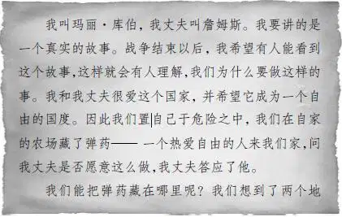
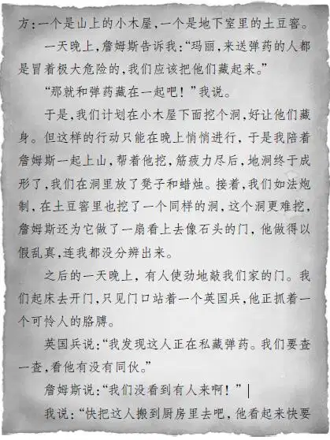
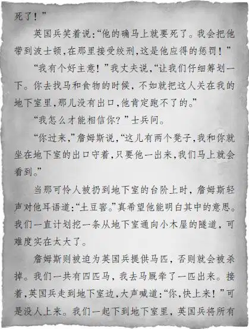
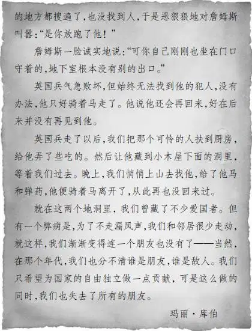

Chapter 15 Letter from Long Ago
麦琪果然没有做鸡蛋。她准备了丰盛的午餐，有冷肉和热乎乎的芝士通心粉，足够一个男子汉美美地吃上一顿的。安迪狼吞虎咽地吃了起来。
“这么长时间以来我吃的全是生冷东西，”他说，“连鸡蛋都是生吃的。”
“在我们这里就不会啦！”简姑婆很喜欢看安迪吃饭的样子。
班尼说：“吃过午饭后，您会给我们看您找到的宝贝吗？”
“好。我一吃完饭就给你们看，这玩意儿现在就在我的口袋里，你们可能会觉得它没什么大不了的，但对我来说却意义重大。”
“只要是在小木屋找到的东西，”杰西说，“对我们来说都意义重大，毕竟那里实在是太神奇了！”
“是的，你们家的地下室也很神奇。”安迪说。
好不容易等到安迪吃饱了，他终于开口说道：“现在，大家一起到院子里去吧！我的宝贝就在这个包里！”
简姑婆在她的椅子上坐好后，安迪递给她一个皮包。
“好有趣的小包！”班尼说，“看起来已经很旧了。”
简姑婆打开小包，包确实是旧到几乎要裂开，里面装着一个皮夹子，夹子里是一张写得密密麻麻的旧信纸。
“信是用棕色墨水写的。”维莉说。
简姑婆小心翼翼地展开信纸。“信的日期是1775年6月，”她说，“我可以开始念了么？”
“可以可以！”班尼已经急不可耐了，“请快点念吧！”
终于，整件事的真相马上要浮出水面了。
简姑婆开始读信了，信上有些字已经模糊不清，因此她读得很慢很慢：




不用说，听完故事以后，第一个开腔的又是班尼：“太不幸了，他们失去了所有的朋友！但不可否认的是，他们为战争的胜利做出了很大的贡献。您是在小木屋里发现这封信的吗？”
“小伙子，这是我很久很久以前找到的。这些年来我一直带着它。”
“安德鲁，你是怎么发现小木屋下面的地洞的？”简姑婆问。
“过程很简单。一天我去山上的小木屋玩，四处打量以后，发现地面有些古怪，便看到了地洞的盖子，下去后就找到了那把燧石火枪，还有一些子弹和这个小包。我本想让简一起去看看，可是她不愿意。”
“我记起来了！”简姑婆说，“我不去是因为你平时总喜欢搞些恶作剧。不过现在我后悔了！”
“简，没关系，过去的就让它过去吧！记得土豆窖里的洞是我帮你妈妈去地下室拿土豆时发现的。我想说出来，可是又不敢。最后，我把枪拿给约翰·科尔看，可是他压根不感兴趣，说自己不懂怎么开枪，也对它的来历不感兴趣，所以我也就没有把信念给他听。”
亨利若有所思地说：“现在我明白了！正是由于玛丽·库伯古怪的举动，才导致了所有人的误解，并滋生了人们为什么不愿意去库伯家的传言。结果是再没人记得谣言的由来，只知道农场神秘兮兮的。只要发生了什么蹊跷事，就会有人说：‘那地方本来就这样！’”
安迪看着亨利，点了点头：“看来你很了解这儿的居民，他们的确会这么说。”
“关于这个农场的谣言流传了这么久，”杰西说，“我们一定要让大家了解实情才行。”
“不用担心！”安迪大声说，“只要大家一看到我，故事就会很快疯传，说不定还会上星期天报纸的头条呢！”
简姑婆笑了起来：“你要把自己登到报纸上去么？老天，老天！跟你在一起总是乐趣无穷，安迪！”
“什么？”安迪大声说，“你是说要和我一起生活吗？孩子们，你们先离开一下，我有话要和你们的姑婆说！”
于是，奥登家的四个孩子一溜烟儿跑到了房子的另一头。他们坐在后门的台阶上，麦琪见状，来到门口，问道：“简小姐没事吧？”
“她挺好的，”班尼说，“我猜她会嫁给安迪，之后不管怎样她都得被叫做豆太太了。”
“果真这样就好了！”麦琪说。
“怎么？”杰西问。
“我很想念西部的家，山姆和他太太也是如此。如果简小姐有安迪照顾，我们就可以放心地回西部的农场了。”
亨利说：“安迪不像会干农活的样子，不过他很强壮，而且简姑婆可以雇一些人来经营农场。”
“我担心的是，安迪待在这儿就找不到什么新鲜刺激的事了。”杰西说。
“说不定他会带简姑婆去旅行。”班尼说。
“哦，不行，她身子太弱，不能去旅行。”维莉大声说。
麦琪说：“亲爱的维莉，不用担心！你们的简姑婆只要想做什么事，就会变得强壮无比。只有碰到不愿意做的事情，她才会软绵绵的。”
“没错，”班尼说，“我也是这样的！”